SIL logo packMark 1d · #0A0A0C / #FFFFFF · 85 files · folder: sil-logo-pack/
01 · Mark — four versions
White on black · mark/…-white-on-black
Black on white · mark/…-black-on-white
White, transparent
Black, transparent
Each as SVG and PNG at 512, 1024 and 2048.02 · Lockups — with and without tagline

Four versions each (white/black, transparent/solid). SVGs carry the fonts inside.03 · iOS — Liquid Glass and tint modes (simulated preview)
Default
Dark
Clear
Tinted
iOS 26 · Icon Composerios/liquid-glass/: background fill + the mark as one layer, or the three strokes as three layers so each gets its own glass depth. Composer generates all four modes above.